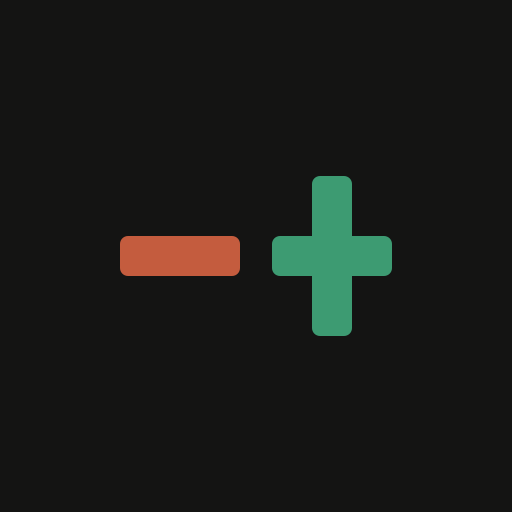
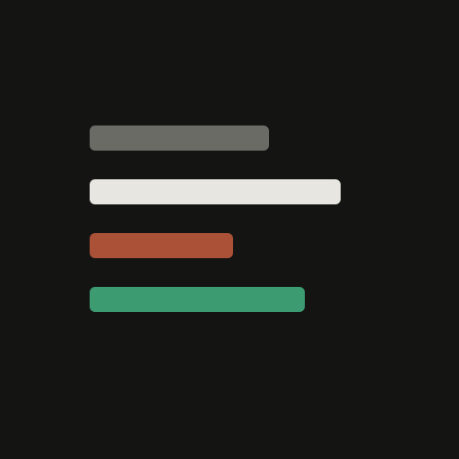
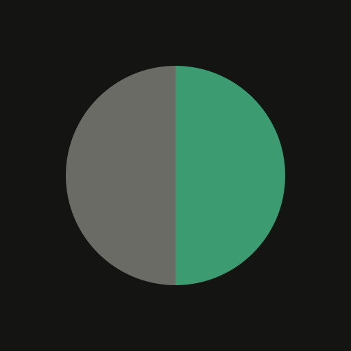

Previous boards used indigo. Your app is near-black + mint accent + cream (Ibarra editorial). This board matches that.
If these still miss: reply with 2–3 words of vibe (e.g. “more brutal”, “wordmark only”, “like Linear”, “no green”) or a reference logo you like.

01-plus-minusAdd / remove — product accent + destructive (real tokens)02-double-barAbstract RP without letterforms — cream + mint
03-edgeCream card with mint edge
04-mint-dotUltra-simple mint ring (matches product accent)

05-parallelDiff lines in real remove/add colors06-cornerEditorial L-corner + cream block
07-liftScore lift arrow — mint only

08-halfHalf muted / half mint — before→after09-pillarSerif-ish pillar (Ibarra editorial feel)
10-cream-onlyCream monogram only — no green, no indigo